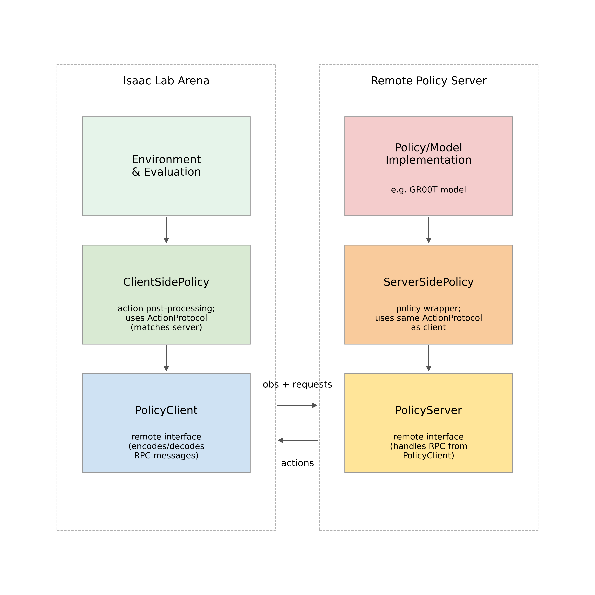

Remote Policies Design#
This section describes the generic remote policy interface in Isaac Lab Arena, how it is structured around server-side and client-side policies, and how to plug in your own remote policies.
For running evaluation with a remote policy (server–client), see Evaluation Types.
Overview#
Isaac Lab Arena supports running policies in a separate process or machine and communicating with them via a lightweight RPC protocol.
The remote-policy design is centred around two main classes:
ServerSidePolicy: implemented next to the model in a remote environment. It defines how to initialise the policy, how to compute actions for a given observation, and how to handle resets or task descriptions.ClientSidePolicy: implemented inside Isaac Lab Arena. It exposes the usual policy interface to environments while handling all RPC-related details (packing observations, sending requests, receiving and post-processing actions).
To make sure both sides agree on how observations and actions are
encoded, the server and client share a lightweight ActionProtocol.
The protocol itself does not implement policy logic; it is simply a
contract that describes:
which observation entries are exchanged and how they are structured;
how actions produced by the server should be interpreted on the client side (for example, one action per step, or sequences of actions), without prescribing a specific model or task.
In practice, model-specific logic usually lives on the remote side in a
custom ServerSidePolicy, while the client side focuses on
post-processing actions inside Isaac Lab Arena. For example,
ActionChunkingClientSidePolicy implements a generic post-processing
pattern for consuming fixed-length chunks of actions produced by many
VLAs, as long as they share a compatible ActionProtocol. If your
policy follows a different pattern, you can implement your own
ClientSidePolicy subclass to adapt the raw actions from the remote
model to the environment.
{kind=link}

Remote policy design in Isaac Lab Arena, showing the interaction between the environment, client-side policy, policy client, and the remote policy server.#
Server-side policy#
Server-side code runs next to the model in its own Python environment
or container. The remote policy utilities are designed to be
self-contained: you can copy the isaaclab_arena/remote_policy
folder into your server repository and import from it without depending
on Isaac Sim.
Using the generic server runner#
In most cases you do not need to implement a custom RPC loop. Instead,
you can start a server using the generic runner
isaaclab_arena.remote_policy.remote_policy_server_runner in the
server environment.
The runner dynamically loads a ServerSidePolicy subclass and passes
command-line configuration to it. For example, to launch a GR00T-based
remote policy, you can run:
python -m isaaclab_arena.remote_policy.remote_policy_server_runner \
--host 127.0.0.1 \
--port 5555 \
--policy_type isaaclab_arena_gr00t.policy.gr00t_remote_policy.Gr00tRemoteServerSidePolicy \
--policy_config_yaml_path /workspace/isaaclab_arena_gr00t/policy/config/gr1_manip_gr00t_closedloop_config.yaml
In this example:
--policy_typeis a dotted Python path to the GR00TServerSidePolicyimplementation that will be imported at runtime.--policy_config_yaml_pathpoints to a model-specific configuration file. Other subclasses may accept different configuration arguments or may not use a YAML file at all.
For convenience, the Arena repository also provides a wrapper script
docker/run_gr00t_server.sh and a dedicated Dockerfile
docker/Dockerfile.gr00t_server that build and run a GR00T remote
policy server container using the same runner.
Custom server-side policies#
To add a new remote policy, implement your own subclass of
ServerSidePolicy in your server repository and configure the
runner to load it.
A typical implementation does the following:
Define the ActionProtocol
Implement
_build_protocol(self)to return an appropriate protocol instance that describes the interface between server and client. For example, when using chunked actions:def _build_protocol(self) -> ChunkingActionProtocol: return ChunkingActionProtocol( action_dim=self._action_dim, observation_keys=self._required_observation_keys, action_chunk_length=self._action_chunk_length, action_horizon=self.action_horizon, )
If your policy uses a different structure (for example, single-step actions or additional metadata), you can define your own protocol subclass instead of
ChunkingActionProtocol. The only requirement is that the client-side policy uses the same protocol class.Implement the action computation
Implement
get_action(self, observation, options=None)to:parse the incoming observation according to the protocol;
run the model forward pass;
return a dictionary that contains at least an
"action"entry matching the protocol (for example, a batch of chunked actions), plus any optional info.
Handle resets and task descriptions
Implement
reset(self, env_ids=None, options=None)to clear any server-side state when environments reset.Implement
set_task_description(self, task_description)if the policy needs a natural-language or structured description of the current task; return a small status or updated config dict.
The GR00T implementation
isaaclab_arena_gr00t.policy.gr00t_remote_policy.Gr00tRemoteServerSidePolicy
follows this pattern: it declares required observation keys, uses
numpy-based preprocessing utilities, and outputs fixed-length action
chunks that are described by a ChunkingActionProtocol.
Client-side policy#
Client-side policies live under isaaclab_arena.policy and inherit
from isaaclab_arena.policy.policy_base.PolicyBase. They run inside
Isaac Lab Arena and present a standard policy interface to environments,
while internally talking to a remote server.
A client-side policy is responsible for:
Managing a
RemotePolicyConfigand the underlying RPC client used to connect to the remote server.Performing an initial handshake to negotiate an
ActionProtocolwith the server.Packing observations into a protocol-compatible format and sending them over RPC.
Receiving actions from the server and applying any client-side post-processing or validation that is specific to the environment.
Implementing a new client-side policy#
To add a new client-side policy, you typically:
Subclass
ClientSidePolicyand choose an appropriate protocol class (for exampleChunkingActionProtocolor your ownActionProtocolsubclass).Implement the core
get_action(...)method, which:uses helper methods such as
pack_observation_for_server(observation)to build the request;calls the remote server to obtain actions;
reshapes or transforms the returned actions into the format expected by the environment (for example, per-step actions, or batched actions across multiple envs).
Optionally override
reset(...)if you maintain client-side state beyond what the base class handles, and callshutdown_remote(...)when you want to proactively clean up the remote connection.
The base ClientSidePolicy also provides:
shared CLI helpers (
add_remote_args_to_parser(),build_remote_config_from_args()) so that policies can be created directly from command-line arguments; anda small set of convenience properties, such as
protocol,action_dimandobservation_keys, which come from the negotiatedActionProtocol.
Example: Action chunking on the client#
ActionChunkingClientSidePolicy is a concrete client-side policy that
implements one specific pattern of post-processing: consuming fixed-size
chunks of actions produced by the server.
It uses
ChunkingActionProtocolto agree on:how many action dimensions the policy outputs; and
how many actions are grouped into each chunk.
Internally it keeps track, for each environment, of:
the current action chunk received from the server; and
which index within the chunk should be used for the next step.
On each call to get_action(...) the policy:
Determines which environments need a new chunk.
Requests a chunk of actions from the remote server for those envs.
Validates shapes against the negotiated protocol.
Returns exactly one action per environment to the caller, while caching the remaining actions in the chunk for future steps.
This pattern is useful when the remote model predicts multiple future actions at once, while the environment still steps one action at a time.
ActionProtocol#
The ActionProtocol family defines the contract that the server and
client use to check that they agree on how to exchange data, without
encoding any policy-specific logic.
All protocols share basic information such as:
how many action dimensions are produced; and
which observation keys should be provided by the client.
Specialised subclasses (such as ChunkingActionProtocol) can add
extra fields that are only relevant for a particular pattern, for
example the length of an action chunk. Other use cases can define their
own protocol subclasses as needed, as long as both the server-side and
client-side policy use the same class.
PolicyServer#
PolicyServer is a small ZeroMQ-based loop that exposes a single
ServerSidePolicy instance over a dict-based RPC API. It is
intentionally minimal: most users only need to implement a
ServerSidePolicy and then start a server via the generic runner
or a domain-specific wrapper such as docker/run_gr00t_server.sh,
without subclassing PolicyServer itself.